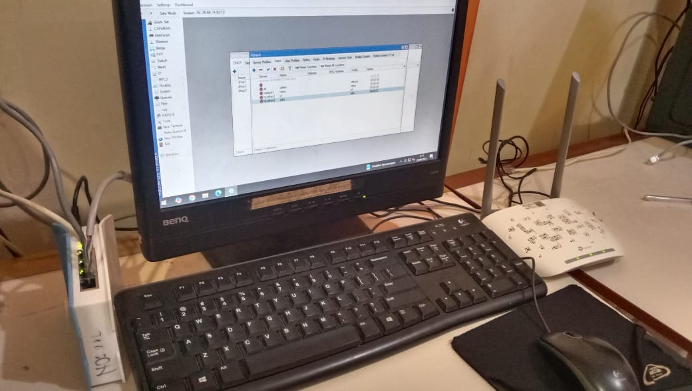

Access Point adalah alat yang menghubungkan perangkat ke jaringan WiFi. Setting access point berarti mengatur nama WiFi (SSID), password, dan keamanan agar pengguna bisa terhubung dengan stabil.
Mikrotik adalah perangkat router yang digunakan untuk mengelola jaringan. Setting Mikrotik mencakup konfigurasi IP, DHCP, firewall, dan bandwidth agar jaringan lebih terkontrol dan aman.
Siapa sih yang nggak kesel kalau internet lemot? Nah, lewat praktikum setting Access Point dan Mikrotik ini, saya belajar cara memperkuat sinyal internet sendiri.
Dari setting SSID, IP address, sampai ngatur bandwidth limit, semua kami pelajari sambil langsung praktek di lab. Kadang ada juga yang salah setting, tiba-tiba koneksi putus semua... seru banget!
Setting Access Point bikin sinyal Wi-Fi lebih luas, sementara Mikrotik membantu ngatur jalur koneksi biar semua pengguna kebagian internet dengan adil.
Berikut dokumentasi hasil praktikum setting Access Point dan Mikrotik:
